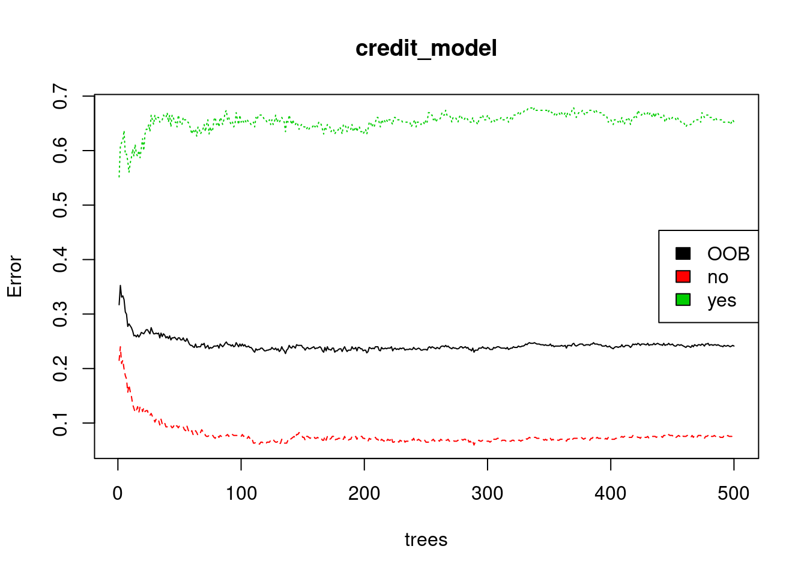
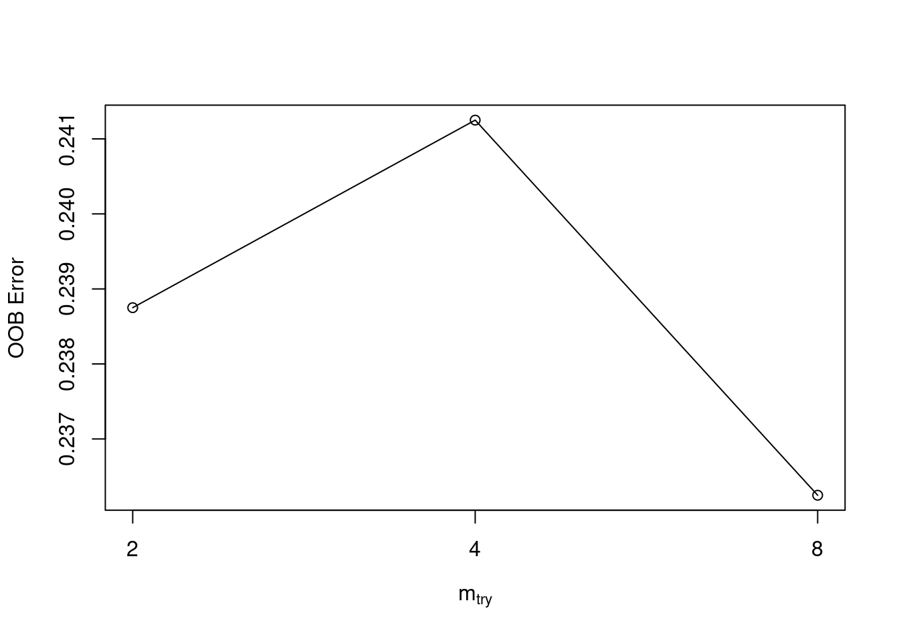

Chapter 5 Random Forests
5.1 Introduction to Random Forests
5.1.1 Bagged trees vs. Random Forest
What is the main difference between bagged trees and the Random Forest algorithm?
In Random Forest, the decision trees are trained on a random subset of the rows, but in bagging, they use all the rows.
In Random Forest, only a subset of features are selected at random at each split in a decision tree. In bagging, all features are used.
In Random Forest, there is randomness. In bagging, there is no randomness.
5.2 Train a Random Forest model
Here you will use the randomForest() function from the randomForest package to train a Random Forest classifier to predict loan default.
Exercise
The credit_train and credit_test datasets (from Chapter 1 & 3) are already loaded in the workspace.
- Use the
randomForest::randomForest()function to train a Random Forest model on thecredit_traindataset.
# Train a Random Forest
set.seed(1) # for reproducibility
credit_model <- randomForest(default ~ .,
credit_Train)The formula used to define the model is the same as in previous chapters – we want to predict “default” as a function of all the other columns in the training set.
Inspect the model output.
##
## Call:
## randomForest(formula = default ~ ., data = credit_Train)
## Type of random forest: classification
## Number of trees: 500
## No. of variables tried at each split: 4
##
## OOB estimate of error rate: 24.12%
## Confusion matrix:
## no yes class.error
## no 527 43 0.0754386
## yes 150 80 0.65217395.3 Understanding Random Forest Model Output
5.3.1 Evaluate out-of-bag error
Here you will plot the OOB error as a function of the number of trees trained, and extract the final OOB error of the Random Forest model from the trained model object.
Exercise
The credit_model trained in the previous exercise is loaded in the workspace.
- Get the OOB error rate for the Random Forest model.
OOB no yes
[1,] 0.3170732 0.2150000 0.5517241
[2,] 0.3525641 0.2400000 0.6083916
[3,] 0.3310924 0.2091346 0.6145251
[4,] 0.3333333 0.2154812 0.6192893
[5,] 0.3264746 0.1992263 0.6367925
[6,] 0.3040000 0.1872659 0.5925926 OOB
0.24125 - Plot the OOB error rate against the number of trees in the forest.
# Plot the model trained in the previous exercise
plot(credit_model)
# Add a legend since it doesn't have one by default
legend(x = "right",
legend = colnames(err),
fill = 1:ncol(err))
5.3.2 Evaluate model performance on a test set
Use the caret::confusionMatrix() function to compute test set accuracy and generate a confusion matrix. Compare the test set accuracy to the OOB accuracy.
Exercise
- Generate class predictions for the
credit_testdata frame using thecredit_modelobject.
# Generate predicted classes using the model object
class_prediction <- predict(object = credit_model, # model object
newdata = credit_Test, # test dataset
type = "class") # return classification labels- Using the
caret::confusionMatrix()function, compute the confusion matrix for the test set.
# Calculate the confusion matrix for the test set
cm <- confusionMatrix(data = class_prediction, # predicted classes
reference = credit_Test$default) # actual classes
print(cm)Confusion Matrix and Statistics
Reference
Prediction no yes
no 123 40
yes 7 30
Accuracy : 0.765
95% CI : (0.7, 0.8219)
No Information Rate : 0.65
P-Value [Acc > NIR] : 0.0002983
Kappa : 0.4205
Mcnemar's Test P-Value : 3.046e-06
Sensitivity : 0.9462
Specificity : 0.4286
Pos Pred Value : 0.7546
Neg Pred Value : 0.8108
Prevalence : 0.6500
Detection Rate : 0.6150
Detection Prevalence : 0.8150
Balanced Accuracy : 0.6874
'Positive' Class : no
- Compare the test set accuracy reported from the confusion matrix to the OOB accuracy. The OOB error is stored in
oob_err, which is already in your workspace, and so OOB accuracy is just1 - oob_err.
[1] "Test Accuracy: 0.765"[1] "OOB Accuracy: 0.75875"5.4 OOB Error vs. Test Set Error
5.4.1 Advantage of OOB error
What is the main advantage of using OOB error instead of validation or test error?
Tuning the model hyperparameters using OOB error will lead to a better model.
If you evaluate your model using OOB error, then you don’t need to create a separate test set.
OOB error is more accurate than test set error.
5.4.2 Evaluate Test Set AUC
In Chapter 3, we learned about the AUC metric for evaluating binary classification models. In this exercise, you will compute test set AUC for the Random Forest model.
Exercise
- Use the
predict()function withtype = "prob"to generate numeric predictions on thecredit_testdataset.
# Generate predictions on the test set
pred <- predict(object = credit_model,
newdata = credit_Test,
type = "prob")
# `pred` is a matrix
class(pred)[1] "matrix" "votes" no yes
1 0.904 0.096
3 0.902 0.098
7 1.000 0.000
9 0.970 0.030
12 0.216 0.784
22 0.826 0.174credit_Model <- randomForest(default ~ .,
credit_Train)
rf_preds <- predict(object = credit_Model,
newdata = credit_Test)- Compute the AUC using the
auc()function from the Metrics package.
# Compute the AUC (`actual` must be a binary 1/0 numeric vector)
auc(actual = ifelse(credit_Test$default == "yes", 1, 0),
predicted = pred[,"yes"])[1] 0.81873635.5 Tuning a Random Forest Model
5.5.1 Tuning a Random Forest via mtry
In this exercise, you will use the randomForest::tuneRF() to tune mtry (by training several models). This function is a specific utility to tune the mtry parameter based on OOB error, which is helpful when you want a quick & easy way to tune your model. A more generic way of tuning Random Forest parameters will be presented in the following exercise.
Exercise
- Use the
tuneRF()function in place of therandomForest()function to train a series of models with differentmtryvalues and examine the the results.- Note that (unfortunately) the
tuneRF()interface does not support the typical formula input that we’ve been using, but instead uses two arguments,x(matrix or data frame of predictor variables) andy(response vector; must be a factor for classification).
- Note that (unfortunately) the
- The
tuneRF()function has an argument,ntreeTrythat defaults to 50 trees. SetnTreeTry = 500to train a random forest model of the same size as you previously did.
# Execute the tuning process
set.seed(1)
res <- tuneRF(x = subset(credit_Train, select = -default),
y = credit_Train$default,
ntreeTry = 500)mtry = 4 OOB error = 24.12%
Searching left ...
mtry = 2 OOB error = 23.88%
0.01036269 0.05
Searching right ...
mtry = 8 OOB error = 23.62%
0.02072539 0.05 
- After tuning the forest, this function will also plot model performance (OOB error) as a function of the
mtryvalues that were evaluated.- Keep in mind that if we want to evaluate the model based on AUC instead of error (accuracy), then this is not the best way to tune a model, as the selection only considers (OOB) error.
mtry OOBError
2.OOB 2 0.23875
4.OOB 4 0.24125
8.OOB 8 0.23625# Find the mtry value that minimizes OOB Error
mtry_opt <- res[,"mtry"][which.min(res[,"OOBError"])]
print(mtry_opt)8.OOB
8 5.5.2 Tuning a Random Forest via tree depth
In Chapter 2, we created a manual grid of hyperparameters using the expand.grid() function and wrote code that trained and evaluated the models of the grid in a loop. In this exercise, you will create a grid of mtry, nodesize and sampsize values. In this example, we will identify the “best model” based on OOB error. The best model is defined as the model from our grid which minimizes OOB error.
Keep in mind that there are other ways to select a best model from a grid, such as choosing the best model based on validation AUC. However, for this exercise, we will use the built-in OOB error calculations instead of using a separate validation set.
Exercise
- Create a grid of
mtry,nodesizeandsampsizevalues.
# Establish a list of possible values for mtry, nodesize and sampsize
mtry <- seq(4, ncol(credit_Train) * 0.8, 2)
nodesize <- seq(3, 8, 2)
sampsize <- nrow(credit_Train) * c(0.7, 0.8)
# Create a data frame containing all combinations
hyper_grid <- expand.grid(mtry = mtry, nodesize = nodesize, sampsize = sampsize)
# Create an empty vector to store OOB error values
oob_err <- c()- Write a simple loop to train all the models and choose the best one based on OOB error.
# Write a loop over the rows of hyper_grid to train the grid of models
for (i in 1:nrow(hyper_grid)) {
# Train a Random Forest model
model <- randomForest(formula = default ~ .,
data = credit_Train,
mtry = hyper_grid$mtry[i],
nodesize = hyper_grid$nodesize[i],
sampsize = hyper_grid$sampsize[i])
# Store OOB error for the model
oob_err[i] <- model$err.rate[nrow(model$err.rate), "OOB"]
}- Print the set of hyperparameters which produced the best model.
# Identify optimal set of hyperparmeters based on OOB error
opt_i <- which.min(oob_err)
print(hyper_grid[opt_i,]) mtry nodesize sampsize
2 6 3 560